InvestigationEncuentro case · 2023King of Spain Award for Narrative Journalism 2024Gabo Award finalist 2023Fetisov Journalism Awards finalistHonorable mention, Javier Valdez Award (IPYS)
ElGranPadrino
The investigation into corruption and drug trafficking that led to impeachment charges against the president of the Republic of Ecuador. Ten journalists, 630 hours of work, 1,500 public contracts and a police report that those in power believed was buried.
Danilo CarreraEl Gran Padrino · the president's brother-in-law
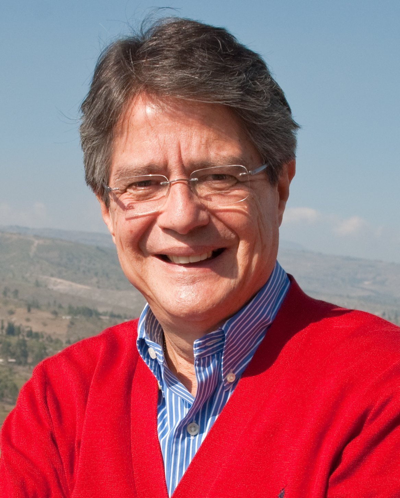
Guillermo LassoPresident of the Republic · 2021-2023
Portraits of Danilo Carrera and Guillermo Lasso · Asamblea Nacional del Ecuador (CC BY-SA 2.0) · Fundación del Barrio (CC BY-SA 3.0) · Wikimedia Commons
34Daily installments
1,500Contracts reviewed
8Prosecutorial investigations
104Votes for the impeachment trial
Scroll
On May 13, 2021, eleven days before Guillermo Lasso took office as president of Ecuador, the National Police's counternarcotics intelligence unit launched a secret operation to map the drug trafficking structure of the Albanian mafia in Ecuador. Lasso knew nothing about it, and neither, worse still, did his influential brother-in-law, Danilo Carrera Druet.
The police report would be closed almost a year later, irregularly and illegally, with the complicity of the police's top brass. But the report they thought was dead was not, to the misfortune of the government, the president and his brother-in-law.
Another year would pass before the 10 journalists on the investigative team, after 630 hours of work, 1,500 public contracts reviewed and hundreds of off-the-record interviews, brought the document to light and set off the corruption scandal that, for the first time in nearly a century, led to a president facing an impeachment trial.
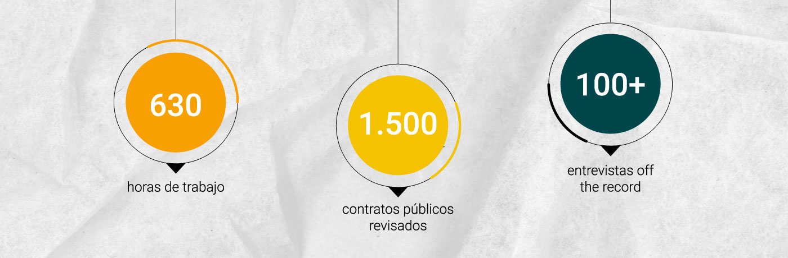
Original infographic from the investigation (2023).
Lasso, a right-wing conservative who came to power after a decade of attempts and anti-corruption promises, would become entangled in the web of this scheme, which even reached its multimillion-dollar tentacles into the presidential campaign, although Lasso says he knew nothing about it.
This network, centered on international drug trafficking operations, seeped into the depths of the state and grew rich off it. Bribe demands, forged documents and rigged contracts in at least four of the main state-owned companies. This state empire includes oil and electricity companies (with combined budgets of more than $14 billion, close to 50% of Ecuador's entire General State Budget for 2023).
All of this was uncovered by an investigation by a young team of reporters that prompted a judicial response. The Attorney General's Office (Fiscalía) responded by opening an inquiry into alleged organized crime, bribery and extortion by public officials.
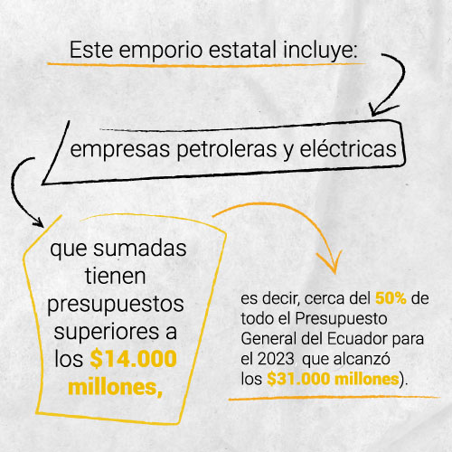
The state empire: oil and electricity companies with combined budgets of more than $14 billion.
The reports also drew a response from the Comptroller General's Office and concern from embassies, and after seven weeks of daily reporting, the political maelstrom ended in a legislative report that recommended an impeachment trial for the president of the Republic.
01Family comes first
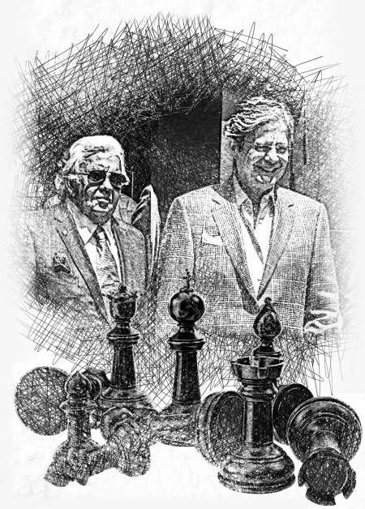
Guillermo Lasso and Danilo Carrera: brother-in-law, mentor and partner for decades.
Danilo Carrera, an 84-year-old economist, is not just the brother-in-law of Guillermo Lasso, who is married to Carrera's sister María Eugenia. He is also his mentor, his role model, his partner for decades and, in the words of many of his close associates, "almost his father." Carrera was the first to give him a job, at the Guayaquil Stock Exchange, when he was 15, in 1970. They have been inseparable ever since.
At 26, Lasso was called president for the first time. Carrera got him a post succeeding him as chairman of the board of Finansur, a lending institution that would later buy all the shares of Banco Guayaquil, where Ecuador's current president built his fortune. Today it is the country's third-largest bank, with profits of more than $95 million in 2022, according to records from the Superintendency of Banks.
Carrera, who declined to comment for this investigation before, during and after publication, was among the first to believe in Guillermo Lasso's political potential. He organized the 2011 meeting with the leader of the Social Christian Party, Jaime Nebot, then mayor of Guayaquil, that launched Lasso's path to the presidency. He was always by his side, not only morally but with his checkbook at the ready. In the last election alone, which brought him to power in 2021, Carrera gave him 250,000 dollars for his campaign, according to National Electoral Council (CNE) records.
It was precisely there that his unbreakable bond formed with his best friend, Rubén David Cherres Faggioni, a name linked to drug trafficking by court rulings and judicial decisions. Or rather, two names: police records show this is his new identity. Previously, his middle name was Antonio, and the "z" in his surname is now an "s."
Carrera and Cherres share worldly tastes. The same style of dress: jacket, shirt and gabardine trousers; a very similar haircut, an easy smile, a permanent tan, the same party spots, and tennis, the favorite sport of the president's brother-in-law.
Rubén Cherres first faced the courts in 1999, in a narcotics case. It was a minor case, of which there are no public records. In 2014 he was back in court, this time for drug trafficking. He and 13 other people were charged with illicit drug trafficking, according to Judiciary Council system records, in a case known as Río Grande, in which counternarcotics police stopped a shipment of more than 945 kilos of cocaine hydrochloride bound for Europe. He was held in prison, where police believe he began his relationships with members of the Albanian mafia, but he was released after a year under prison benefits. Nine years later he was granted a provisional dismissal. The case remains open to this day, with no final verdict.
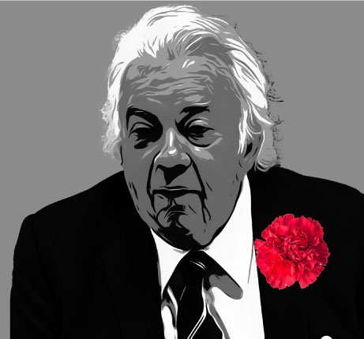
Danilo Carrera Drouet, "El Gran Padrino."
That court history did not stop his friendship with Carrera from growing stronger and becoming public. Cherres was a regular visitor at the block-long mansion the president's brother-in-law owns in Los Ceibos, an affluent, traditional Guayaquil neighborhood. Nor did his presence bother Guillermo Lasso: Cherres worked actively on his campaign at Carrera's invitation.
02The first confession
Leonardo Cortázar, alias "Messi," confessed how the structure operated.
This investigation began in mid-2022 with routine tracking of contracts in the electricity sector. A complaint had reached the newsroom from state suppliers who were protesting a "corrupt monopoly" set up to favor a shadowy figure outside the official ranks of the electricity companies.
The main figure in the complaint was Leonardo Héctor Cortázar Arcos, who called himself "Messi." Like the global soccer star, he made every feint needed to dodge the controls of Ecuador's public procurement service and build a network of operators inside the country's strategic companies. He pulled it off under three consecutive governments: Rafael Correa's (2006-2017), Lenín Moreno's (2017-2021) and the first year and a half of Guillermo Lasso's.
He is a 41-year-old engineer, though he never practiced his profession. He preferred to play businessman and politician, and he prospered on the back of public contracts. According to records from the Superintendency of Companies, as of January 2023, he was manager of Anticre, a family-owned company, and held shares in Plásticos Andinos, Reyavi and Inlaks. Curiously, none of them had direct contracts with the state. "Messi" was skilled at not raising suspicion with his personal finances. He had not paid taxes since 2002, according to the report from the Internal Revenue Service (SRI).
Cortázar, articulate and with a rural accent, felt at home in the electricity companies. And although he preferred to keep a low profile, his name began to come up among many suppliers. The investigative team tracked him down and obtained his confession in an almost clandestine meeting: no cell phones, a private room, voices lowered to a whisper. Faced with the documentary evidence, he agreed to talk about his business. During that conversation, which would become the first piece of the series, he admitted that he had operated in the electricity companies since Correa was in the presidential palace. He described how he consolidated his network of officials under Moreno and how he kept winning contracts under Lasso with the blessing of a godfather. A great godfather: Danilo Carrera, the president's brother-in-law. That is what he called him, again and again.
"Messi" was skilled at not raising suspicion with his personal finances. He had not paid taxes since 2002, according to the Internal Revenue Service report. He had a perfect front, and his trail was only detected by reviewing more than 35,000 documents from Ecuador's strategic companies, which revealed a criminal structure operating inside the main state companies run by the executive branch.
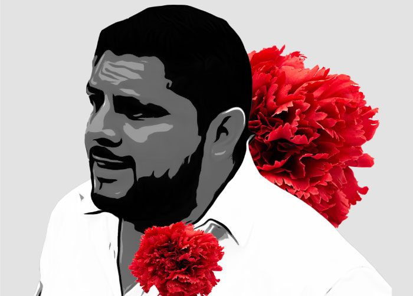
Cortázar had not paid taxes since 2002, according to the SRI.
"Old man (Rubén) Cherres and Danilo (Carrera), when those guys are the godfathers, nobody can make them show up. They're still not visible at all and nobody's heard from them. You try to look out for yourself, brother, and not expose the godfather," Cortázar said indignantly at the start of the conversation. He was referring to the many times this outlet had made inquiries about the two men. "I'm not here, I mean, for Leonardo Cortázar. You know I answer to other people," he added, suggesting he had come to the meeting with authorization from above. In this meeting, he also described how he operated from the state's Strategic Companies office to win contracts behind a facade of apparent legality.
To this day, not even Cortázar knows how he managed to work his way into Guillermo Lasso's government. He was on the other side of the political divide. He was an active supporter of former president Lenín Moreno and even helped Moreno's brother Gary create the political movement Libertad es Pueblo in 2019, something the former president's brother never denied.
Two years later he took part in the Correísta campaign, actively supporting the presidential ticket of Andrés Arauz and Carlos Rabascall, as well as Ronny Aleaga, now a Correísta assembly member. He referred to Aleaga as "my operator. He wouldn't have gotten where he is if it weren't for our financing," Cortázar said at the time. The legislator repeatedly denied the accusation and even claimed that his only encounter with Cortázar, a chance one, he said, took place at the Miami pool of Xavier Jordán, another man under investigation for corruption.
Cortázar's first contact with Guillermo Lasso's government came, you could say, by chance:
"Monge, brother, comes into the National Electricity Corporation (Cnel). He sees me there. He tells me: fatso, stay. The guy wanted me to stay sitting there like on assignment, as an adviser, as manager (…) Brother, how the fuck am I gonna do that if everybody links me to the guy, to 'double wheel' (as former president Moreno, who uses a wheelchair, was known), I stay outside operating everything." In contractor slang, to operate means to run the illicit transactions.
According to Messi's account, this encounter allowed his shadowy business network in the electricity companies to keep operating. According to his testimony, he did so with the consent of César Monge, one of the people closest to President Guillermo Lasso. Monge was his political enforcer, his adviser, president of the ruling party and his first government minister, but he died on July 25, 2021, after a painful battle with cancer.
"Yeah, look, the guy dies and he has a deal with us, that we start operating the National Electricity Corporation (Cnel), Roberto Bueno and me. And they were going to knock us out, the guys who were supposed to come in. We went to Monge's wife and she went to the President and the President told her: Until December (2021) I'll respect the people who reached an agreement with him. And they respected us until December."
To uncover the truth about Cortázar, the team had to dig through thousands of pages of electricity company contracts. The first lead turned up in the province of El Oro, on the border with Peru. Operating there was Karen Cornejo Ortega, an economist who decided to set up comprehensive power generation service companies with her husband, Javier Ronquillo López.
Together they created the companies Laurety SAS, Contraselec and Servicios Integrales de Ingeniería Eléctrica Ronquillo & Cornejo, between 2019 and 2021. Ronquillo also opened another company with his mother, Patricia López, a homemaker. They named that company Electricaodeth, in 2018.
Rodrigo Polo, legal representative of the El Oro Association of Electrical Engineers, filed a criminal complaint against Cornejo and her companies, alleging that she was suspiciously winning contracts at the National Electricity Corporation (Cnel), a state company with an annual budget of more than $300 million.
This investigative team verified that in at least 11 contracts awarded to Cornejo's circle, worth at least $5 million, the staff résumés and Ecuadorian Social Security enrollment records were allegedly forged, an essential requirement for winning the bids. The team also found that they partnered with other companies, used as fronts in the form of consortiums, to get around the minimum-experience requirement that is central to Ecuador's Public Procurement Law.
Those contracts were signed in 2022 and totaled exactly 4,936,829 dollars. The electrical engineers' association took its formal protest to the top of the government. On May 11, 2022, it sent a letter to the general manager of the National Electricity Corporation, Antonio Icaza. The document described the irregularities they had found. They got no response. Neither did this team when it included these facts in its reports.
On the contrary, on August 22, 2022, the government responded in the least expected way. In their inbox was an official letter signed by Carlos Ordóñez, as the official in charge at the National Electricity Corporation. He said that, after a review, their complaint was unfounded. Months later, the Association of Engineers obtained a court order forcing Social Security to certify that the records used were forgeries. The common denominator in all of them: Karen Cornejo, with whom Cortázar himself acknowledged having a close relationship.
03An electrifying corruption network
The network of companies and consortiums that took turns winning CNEL contracts.
The team's investigation documented a complex network in the electricity sector designed to get around the weak controls of Ecuador's public procurement system. To do so, Karen Cornejo, who operated on "Messi's" orders, used the company registered in her mother's name, Electricaodeth S.A., whose manager was Éricka Farías.
Electricaodeth S.A. received at least three direct contracts worth half a million dollars from CNEL. To avoid drawing attention to the good fortune of Karen Cornejo's company, it then teamed up with a company owned by her partner, Ericka Farías, and with Farías herself as an individual. In this way, a $2.5 million contract in 2022 went to a different legal entity: Consorcio Codelectric, which was in fact a front for Cornejo and her partner Farías.
This method, used in at least a dozen projects, simulated competitive bids or tenders, in which the law requires at least three bidders to compete for the contract so the state gets the best price and offer. In these projects, according to documents obtained by this outlet, Cornejo gave the green light to a tangle of related players who were supposedly competing against one another.
To illustrate this complex scheme, take, for example, the installation of meters in the cities of Milagro, Durán and Machala and in the province of Los Ríos. Luis Loayza bid for the meters in northern Los Ríos, but also for Machala and Durán, two cities on Ecuador's coast.
In northern Los Ríos he competed against David Duque Idrovo, whom he also faced in Durán, where the third bidder was Jilmer Ocielm Cia Ltda, which had earlier won the southern Los Ríos contract.
Always the same players, taking turns on the projects. These triangulations involve at least 12 identified suppliers and should have set off alarms in bid oversight, since the rules expressly prohibit business relationships between participants. However, according to Social Security records, made public on August 17, 2022, after the Association of Electrical Engineers obtained a court order, all of these supposed competitors showed up to the bids with documents certifying their experience signed by the same people: Karen Cornejo or some of her companies and consortiums.
These are the forged records, now under prosecutorial investigation, one of the four investigations the Attorney General's Office opened as a result of this reporting.
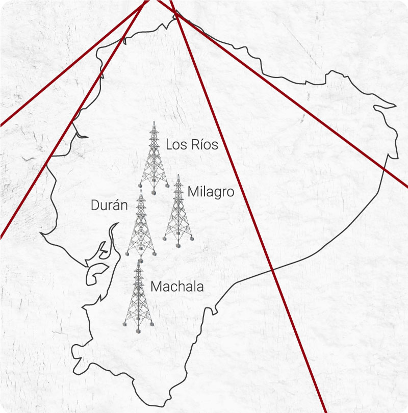
Ecuador's electricity sector: the spoils.
The government also knew about these records. On November 9, 2022, the Association of Electrical Engineers pressed its complaint again, and Linda Haz, the government's director of Citizen Services, forwarded it to Energy Minister Fernando Santos. They never got an answer. Not even from another official who had been informed, the man in charge of the state's strategic sectors: the manager of the Public Companies Coordinating Company, Hernán Luque Lecaro, whom Cortázar referred to as "H." What follows is an exact reproduction of one fragment of Cortázar's conversation with one of this outlet's journalists:
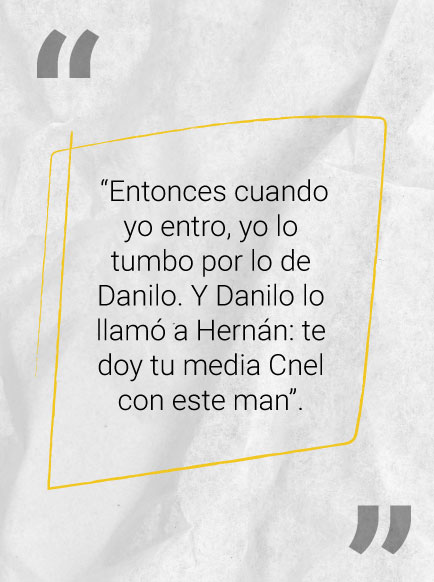
The same players, taking turns on the projects.
"When they leave, they reach a deal with H," says Messi.
"With Luque?"
"Of course. And the guys knock me out. Because I was running units and running that shit with Roberto Bueno. I start making moves. And the Turk takes me with Rubén (Cherres) to Danilo (Carrera) and we knock out those sons of bitches. So when I come in, I knock him out because of the Danilo thing. And Danilo called Hernán: I'm giving you your half of Cnel with this guy."
This excerpt of the conversation, published on January 9, 2023, turned the country's attention to an official with ministerial rank who until then had kept quietly out of view: Hernán Luque Lecaro.
According to Cortázar, the all-powerful head of the state companies knew about the money being looted from public coffers: "Come on, brother, he was the one who carried and handed over the money. Not me. After two months, they do a cash count on us and there was a shortfall of like 300 grand ($300,000)."
That dispute over money would cost the corrupt network dearly. The first to pay was Cnel's general manager, Antonio Icaza, who was removed from his post by government decision.
04The former banker who saves in Andorra
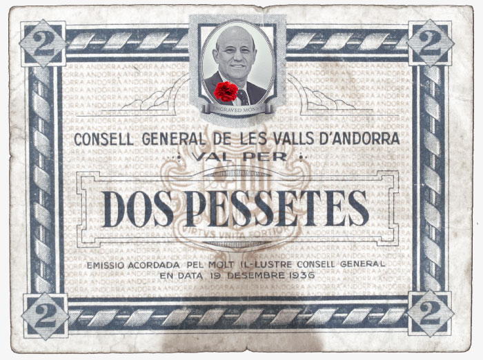
"We're going to go open the accounts in Andorra": Hernán Luque.
The last known whereabouts of Hernán Luque Lecaro, former manager of the Public Companies Coordinating Company (EMCO), is Argentina. The president has promised, in a national broadcast, to "bring him back by the scruff of the neck." But a few hours after this team's reports came out, once his relationship with Leonardo Cortázar and the way contracts were divvied up in the country's electricity and oil companies had been exposed, he took a one-way flight out, according to immigration records obtained by this team. No one is answering for the absence of the most prominent public official caught up in this scheme, who still faces no arrest warrant.
"And Hernán (Luque) tells me, look, man, I can't give you all of Cnel anymore. Why? Jorge (Orbe) and Julio (León) have it again (…) They'd given it back to those guys. Because the guys were saying, fuck, why let in a third guy we don't know, let's go with these sons of bitches we already stole with. Hernán tells me: I don't trust these sons of bitches, take whatever they give you, a couple of crappy units, for a month. Go on, you son of a bitch, I'm going to back you and you're going to run all that shit. I went and met at Orbe's house, and sure enough the guys treated me like garbage. This is what there is, son of a bitch… don't come here asking for shit. And Hernán kept telling me accept it, bro, accept it. Fine, bro, I accept. I left pissed off as hell. In two weeks I knocked them out, because when I got into Cnel I changed the whole head-office team. I know one thing Hernán is scared of is when people start hitting him over changes, and 24 hours after he makes changes, I put out a hell of a smear sheet and spread it everywhere."
This revelation by Cortázar refers to a video posted on social media with the voice of Anonymous, which pointed to Jorge Orbe and Cortázar's own partner, Roberto Bueno, as the faces behind the changes in the electricity sector. Although anonymous, it spread widely and even reached the entire electricity industry. The move helped him regain control of contracts at the National Electricity Corporation (Cnel). Luque backed down, and Cortázar managed to keep his team of officials.
Rubén Cherres and Danilo Carrera.
That control was confirmed by Luque himself. "That's when Hernán gets pissed: you guys can't generate shit. Messi's got you scared shitless because he runs the whole Head Office (Cnel's central office). Even if you have a manager, let Messi run everything, go to hell. And they kicked them out," he recounted later.
Luque, who never responded to this outlet's requests for comment, sided with Cortázar's schemes, a relationship that ended his public career. He arrived at the helm of the country's strategic companies with a long career in the private sector: real estate and media companies, but above all banking.
He worked at the Guayaquil Stock Exchange, was vice president of Banco Amazonas and was also vice president of Commercial and Personal Banking at Banco Guayaquil, the financial empire of President Guillermo Lasso's family, where he worked with Lasso for almost 20 years, always in positions of trust. Despite that closeness in the private sphere, once the scandal broke, Lasso said of his long working relationship with his bank's vice president, back when Lasso was its president: "Luque did not work directly with me."
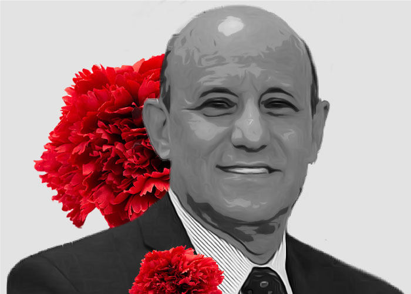
Luque worked for almost 20 years at Banco Guayaquil.
He worked at the Guayaquil Stock Exchange, was vice president of Banco Amazonas and was also vice president of Commercial and Personal Banking at Banco Guayaquil, the financial empire of President Guillermo Lasso's family, where he worked with Lasso for almost 20 years, always in positions of trust.
That power, which brought not only great responsibility but also hefty irregular benefits, was handed over on a silver platter by the president himself. On August 18, 2021, Lasso signed Executive Decree 163, which gave sweeping authority to the manager of the strategic companies. The president changed the legal rules for this new post. Former president Lenín Moreno had established that the boards of these institutions would be made up of the manager of the Strategic Companies, the ministers of each sector and the presidential delegate. But each board was chaired by the ministers.
By executive decree, the current president instead concentrated decision-making power in the post of Manager of Public Companies, who took office under Decree 107 as Guillermo Lasso's direct delegate. Luque Lecaro was thus anointed by his former boss at Banco Guayaquil, now president of the Republic, as lord and master of a public business structure with the power to award 14 billion dollars in contracts.
Further evidence of Lasso's trust in Luque is Executive Decree 261 of November 20, 2021, which named him coordinator of the Sectoral Cabinet for Strategic Companies. The decision was meant to organize the executive branch's work by giving coordinators in different areas oversight and execution of official policy. And it is precisely the strategic companies that are now under investigation by every oversight authority in Ecuador.
Luque, a tennis player and frequent visitor to the Tenis Club de Guayaquil, had committed to giving constant reports to Iván Correa, then the second most politically powerful man in the presidential palace. Correa was another former Banco Guayaquil executive whom Lasso brought with him into government. He was always part of Lasso's inner circle: after leaving the bank, he was at his side in every political campaign and even managed the successful 2021 race. In Carondelet, he would stand in for the president in running the cabinet as Secretary of Administration.
All responsibility for the strategic companies would then fall on their manager, Hernán Luque, who, according to the Secretariat of Higher Education, has no registered degree, but who was presented in official press releases after his appointment as someone with "extensive academic training, with a BS in Finance from Florida State University and in Business Administration from the Tecnológico de Monterrey."
In Ecuadorian politics, no one was surprised by the appointment or the new responsibilities. Guillermo Lasso knew Luque very well, not only as a subordinate but as a frequent guest of his brother-in-law, Danilo Carrera Drouet, on the family's tennis court.
That closeness explains the outsized reaction with which Guillermo Lasso, during the second week of publication, decided to make Luque the scapegoat to be sacrificed for government corruption.
This team released recordings of a conversation, passed on by confidential sources present at the discussion, between the official Hernán Luque and the operator Rubén Cherres. The president had just landed in Davos, Switzerland, when he heard the following:
Luque's declared assets fell to $238,072 in one year.
"I'd rather you give me $150,000 a month. That shit gives me peace of mind. Whenever there's more than that, you save it for a year later, then you'll see. My cousin already knows… We're going to go open the accounts in Andorra."
According to his inner circle, Lasso saw the report on the presidential plane itself. It was the morning of Monday, January 16, 2023, afternoon in Europe. In less than two hours, the president drafted an official letter to the Attorney General's Office that, among other things, ordered "the Interior Minister and the Commander General of the National Police to urgently carry out all necessary tasks to locate" Rubén Cherres and Hernán Luque. That has not happened to this day.
It was the second letter he had sent to the Attorney General's Office in less than 24 hours; the night before, he had asked for the opposite, that this "absurd" investigation be closed for lack of evidence. The president justified his change of heart a week later in an interview with journalist Milton Pérez, broadcast nationwide. Lasso appeared visibly shaken, and his voice nearly broke as he recalled the moment: "I felt outrage when I heard the audio. That voice is the voice of Hernán Luque. He betrayed the trust that was placed in him."
But it was not the only time the president changed his position. In that same interview, speaking about Hernán Luque, he called him "a fool." He said he asked for his resignation because he "was not confident that (Luque) had understood that the government fights corruption. That we don't give corruption a single inch." Exactly one month earlier, in an interview with Carlos Vera, he had said something different: "People resign and want to leave, change positions. What can I do." That is how he dodged the question about why Luque had left the government, days before the scandal.
Luque took over as manager of the strategic companies with declared assets of $587,434, including a house in Guayaquil valued at $336,000, an office worth just over $19,000, two bank accounts holding $22,198 and shares worth another $105,000, according to records obtained by this team.
A year later, in December 2022, he claimed he had lost money in his political venture. He swore to the Comptroller General's Office that his assets had fallen to $238,072; he no longer had the house or the office; he reported barely $56 in two banks and outstanding debts of $110,318. On official paper, he was essentially broke.
Investigators are trying to determine how this official, who left public service in the red, could hold conversations like the one reproduced below. It is a business meeting between Luque and Cherres, published by this outlet, that begins with a call on speakerphone:
"This is Javier's brother, Javier's brother. Got it? OK," Cherres says in a booming voice. His brother is, in fact, Javier Cherres. He goes on: "We need someone who knows the business. Send the résumé as fast as possible."
He hangs up.
"There at Flopec, things can definitely be done. Once you put…" Luque replies.
"That's worth millions upon millions. And outside, with the pools (consortiums)."
"With the pools," Cherres says, confirming.
"Laughing all the way."
"Laughing all the way," says Cherres, who by this point sounds more like an echo than a participant in the conversation.
"Brother, Flopec is a beauty," Luque says, trying to develop the idea, "but well handled. Nicely handled."
______________
The entire conversation then revolves around the Flota Petrolera Ecuatoriana (Flopec), one of the less visible but juicy state companies, which Luque, Cherres and the structure around them came to control, with an annual budget of more than $800 million, according to 2022 financial reports.
05A "nicely handled" business
Flopec: "nicely handled."
The Flota Petrolera Ecuatoriana (Flopec), the state oil tanker fleet, was created in the 1970s to carry Ecuadorian crude and its derivatives to international markets. Its management is vital to the national economy, but "nicely handled," it fills the pockets of corrupt groups.
Hernán Luque, former manager of the Public Companies Coordinating Company (Emco), had sniffed out those "deals" since taking office in July 2021. The investigative team managed to document two meetings Luque led to put Flopec to work.
One of the meetings was with former Energy Minister Xavier Vera, another key figure in this scheme. His name was put forward by Rubén Cherres. Vera is currently the subject of a criminal inquiry for alleged bribery, following an investigation previously published by this outlet in July 2022 that revealed demands for money, forged documents and other alleged crimes. That investigation cost him his job and led the Attorney General's Office to raid his home.
The other meeting was with Juan Carlos Bermeo, considered Flopec's strongman. In a recording obtained by this team, Luque states that "at Flopec they've carried off the money in sacks" and that he "has the profit and loss statements of the two pools Flopec works with in Panama," with discrepancies of about $21 million hidden from the Ecuadorian state's records.
He maintained that both pools report profits for Flopec and that Oswaldo Rosero, who would become Flopec's manager after that conversation with Cherres, "is first-rate." He was Luque's candidate. Luque's intention was to bring him back into the company as an adviser because he needed "someone who does things right, who makes deals."
This investigative team was able to confirm that what Hernán Luque said came true at Flopec, to the letter and in detail. The "pools" Luque mentions became indispensable to the corruption network. The pools are a complex intermediation scheme that the structure exploited because they handle public money but fly under the radar of Ecuador's oversight agencies.
Flopec lacks the financial logistics to operate on the international market, so it needs the backing of consortiums, usually made up of several shipping companies, that act as logistics operators in charge of optimizing oil tanker voyages. In other words, they handle shipping Ecuador's crude cargo to international destinations. If the ships returned to the country empty, they would generate losses. That is the reason the "pools" exist.
Flopec has agreements with two "pools" that frequently operate in Panama. The main one is Amazonas Tanker, which is structured in an unconventional way: rather than having several shipping companies as partners, its representative is Amazonas HOLDING LLC, a company run by Mr. Ty Shimano, who in turn works for Core Petroleum, which in turn has Dragun S.A. as an associate, whose corporate ties lead to Gunvor, notorious among Ecuador's anti-corruption prosecutors. Gunvor is a company caught up in corruption scandals during the administrations of former presidents Rafael Correa and Lenín Moreno over Ecuador's oil presales to PetroChina. In other words, the same companies that were part of the corruption network under previous governments. In April 2021, while still president-elect, President Guillermo Lasso promised to "break the chains of corruption in oil intermediation," in an interview with this outlet. It was an indirect reference to businessman Enrique Cadena Marín.
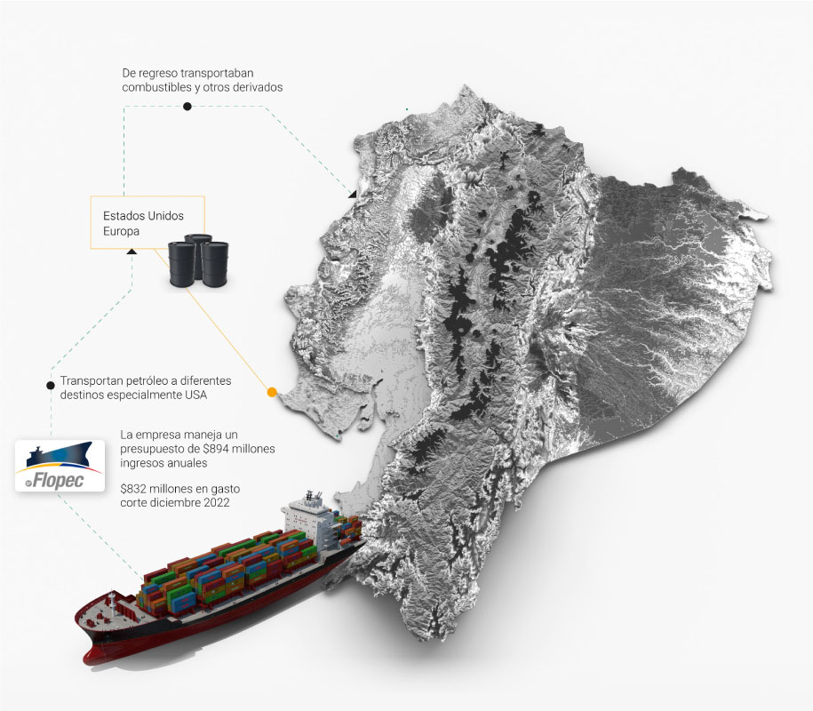
Amazonas Tankers is headquartered in the Marshall Islands (Oceania), a tax haven. In November 2021, report DNA8-TVIPyA-0012-2021, signed by Carlos Varela Núñez, national director of Transportation Auditing at the Comptroller General's Office, found that the agreement between Amazonas Tankers and Flopec had cost the state $6.1 million. Under the arrangement, the fleet managed by Amazonas Tankers was supposed to consist of Flopec ships and chartered ones. The irregularities concern the latter: the ships Emerald Spirit, Sea Bay, Sea Falcon, Chio Lion and Alyarmouk. According to the Comptroller's analysis, Flopec spent more on chartering the vessels than the profit they generated. The financial losses for the company began between March and December 2020. Revenue from the state crude transport company's own and chartered ships was $41.5 million, and when the profits were divided, Flopec received just $35.4 million. In other words, the state company lost $6.1 million.
There is an explanation for the loss. According to Flopec internal financial report GCO-003-2022, exposed by this team, the "pools" chartered the ships at prices far above market. The overcharges ranged from $4,975 to $9,220 per voyage. This arrangement, known as a time charter, racked up multimillion-dollar annual losses. The Comptroller's recommendation was to terminate the contract with the "pool." In public law, a recommendation is not a suggestion but a binding, mandatory directive. Even so, Flopec not only failed to comply, but Hernán Luque did everything he could to block it.
The ships chartered by the pools cost more than they earned.
On February 1, 2022, an internal Flopec report recommended renewing and extending these agreements, without even attempting to contract directly with the fleet owners. That recommendation from Flopec's board, chaired by Luque by presidential appointment, was defied by the state company's then-manager, Johnny Estupiñán. His refusal to continue a contract that harmed public coffers cost him his job. Resolution DIREC-FLOPEC-004-2022, of March 9, 2022, justified the "immediate" removal of the general manager for "failing to comply" with his superiors' orders.
Vice Admiral Johnny Estupiñán informed the president of the Republic of this clearly irregular situation. Official letter JEE-011-22-O, signed by Estupiñán, laid out this background in writing to Guillermo Lasso and, the document says, "based on your anti-corruption policy," requested a meeting at Carondelet to explain "the costly harm" the state was being dragged into. He was never received. But the document remained as a second piece of documentary evidence that the president had been informed in writing of Luque Lecaro's dealings.
The general manager who replaced Estupiñán and pushed through the renewal, with its multimillion-dollar losses, was Oswaldo Rosero, whom Luque had described as "first-rate" in the conversation with Rubén Cherres when they were looking for a replacement. Rosero never responded to this outlet's request for comment, but he was removed from his post by government decision after these investigations.
06So that "we all win" with the nation's oil
Petroecuador, the mecca of corruption.
Petroecuador is not only the nation's largest state company but has also been the mecca of corruption for years. In the past decade, six general managers have been investigated, charged or convicted for corruption, including two managers reported as part of the Gran Padrino structure, Ítalo Cedeño and Hugo Aguiar, both appointed by President Guillermo Lasso.
The investigative team found contracts with irregular terms of reference, overpriced contracts, a sitting manager taking part in meetings where "deals" outside the law were discussed, and a case of kickbacks to private parties from the oil company to speed up payments.
As one example of the network's murky contract handling, this outlet found that an oil company contract had possibly been steered to benefit Vladmau Construcciones, owned by Álex Bravo, a former Petroecuador manager serving a prison sentence for crimes against public administration. The contract, from December 2022, covered maintenance of the heart of the refinery, the FCC unit, where crude is turned into fuel. The terms of reference required specific experience, one that only Bravo's company could claim: "certification that refractories have been installed in refining within the last five years," the bidding documents stated. The only company in the country with that experience belonged to the man convicted of corruption. Petroecuador scrapped the imminent contract once the requirement was exposed.
In response to these allegations, Petroecuador, then headed by Hugo Aguiar, a respected Harvard-trained administrative lawyer, claimed in an unsigned public statement to have implemented at least "6 anti-corruption mechanisms." It was an attempt to shift responsibility to the administration that preceded Aguiar's.
But the corruption would end up splashing the office of Petroecuador's then-manager:
First came the documents of an ongoing procurement. This team revealed how the budget for installing a thermoelectric turbine tripled with no justification. In 2022, under former manager Ítalo Cedeño, the budget for the project was set at $4 million, but under Aguiar the estimate rose to $12 million. These figures appear in the oil company's procurement documents.
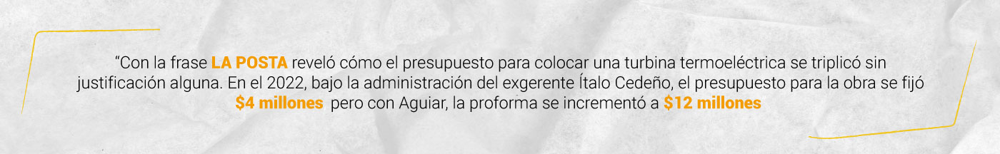
"So that we all win": the kickback hidden in a mediation.
The splash turned into a stain in February 2023, when this investigative team made public a call made by a former Petroecuador official, María José Romo. In the conversation, Romo approaches José Rafael Félix, a lawyer for Areasurvey, a state supplier that was (and still is) in litigation with the state oil company Petroamazonas, which was absorbed by Petroecuador. Romo is direct: she says she is calling on behalf of César Pazmiño, who at the time of publication was one of Hugo Aguiar's trusted managers, and offers to speed up a payment to the private company by hiding a bribe in the mediation process. Petroecuador, the lawyer Romo says, would make a counteroffer of $5.5 million to settle a mediation process. The bribe would come out of that. The conversation goes like this:
"So, I understand that Petro is going to send me a counterproposal to our emails. To the designated emails. And it's going to tell us: 5.5. And on what terms is it going to make that counterproposal?" The question is not naive: the company's lawyer wants the illicit offer to be explicit. Aerasurvey, the company involved, told this outlet that the extortion did take place and that the counteroffer reached them, but that they never made the payment.
"Look, right now what we're discussing is, uh… Obviously, the, the… People at Petro… So that we all win," the official Romo says, circling around as if struggling to spell out the request, until she finally dares: "the proposal is this: Give 4.5 to you, to Areasurvey and whatever's involved. And they want to take the million separately."
"Who is 'they'?"
"César's (Pazmiño) team, Bejamín and all of us on the disbursement team."
The exposed extortion landed like a bomb on Hugo Aguiar's already turbulent Petroecuador. Pazmiño held a position of trust under Petroecuador's general manager, who was the only state company manager kept in his post by presidential decision after the investigation began.
César Pazmiño denied the allegations. But Petroecuador took only a couple of hours to ask for his resignation. In a letter sent to this outlet after publication, the official rejected any link to his name and warned that he would report the "use of his name" to the Attorney General's Office. The Attorney General's Office, however, moved faster.
The day after these reports, César Pazmiño's home was raided. So were the homes of former Petroecuador general manager Ítalo Cedeño and his sitting successor, Hugo Aguiar. The Attorney General's Office also carried out urgent raids on Petroecuador's general management offices and on the presidential palace itself, Carondelet.
Given the scale of the events, the government, which had kept Hugo Aguiar in his post a week earlier, called an extraordinary meeting of the state company's board, which voted unanimously to dismiss the general manager.
07The government knew and did nothing
The government knew and did nothing.
It came as a surprise to the investigative team and the audience, but not to the national government. As has been shown, not only had senior officials (the president of the Republic, the secretary of administration, the manager of EMCO and the managers of state companies) received documented complaints of alleged corruption on dates as far back as June 6, 2022. Top officials at Carondelet also knew that people outside public administration were involved in state contracting, as this team would show with the leak of a conversation on the subject featuring the deputy legal minister Mauricio Guim.
Mauricio Guim was one of the rising stars of the Fundación Ecuador Libre, the think tank that laid the ideological groundwork for Guillermo Lasso's government plan. He earned a doctorate in juridical science from the University of Virginia and was a university professor in Mexico. From there he boarded a plane in May 2021 to take office as Legal Undersecretary of the Presidency, by presidential order.
Good-natured, a joker and quick with an insult in private, Guim was in charge of drafting executive regulations, including, ironically, the president's Decree No. 4, the code of ethics for government officials. He left Carondelet at the end of 2022 to become private secretary to the Attorney General of the State (Procurador General), a job he lost the very day this outlet's reports came out, when he was implicated in the scheme.
After the government first denied that a corruption structure existed, the official line ended up acknowledging that the scheme had taken place, but as "an individual, isolated case," as Secretary General Iván Correa put it. In fact, in most interviews on the subject, government officials initially tried to discredit the investigation because it relied on a person with no credibility. Then-Government Minister Francisco Jimenez put it bluntly: "For the government, Mr. Cortázar does not exist."
It would be a different story when the one confirming the involvement of members of the network was a former deputy minister, Mauricio Guim.
"I'm going to tell you how the thing works," Guim tells a person whose identity this outlet has protected. "(Jorge) Orbe does have contact with a minister. And the minister he talks to is Hernán Luque, it's Hernán Luque… Orbe has his piece of power. He has a piece of Celec and a piece of Cnel."
That description, confirmed in this conversation from early 2022, when Mauricio Guim worked at Carondelet just a few doors from the president's office, shattered the official line of denial. Mauricio Guim, who never responded to this outlet's requests for comment, not only failed to report the crimes he knew about (for example, extortion of state suppliers and irregular handling of contracts) but, a few hours after the February 8, 2023, broadcast, fled.
The Attorney General's Office and the National Police stopped him from leaving the country when he was a few kilometers from the Colombia-Ecuador border, at a point where he had not registered to cross. He was provisionally detained for investigative purposes, and after eight hours of fruitless questioning, during which he invoked his right to remain silent, he was released. Authorities kept his computer and personal phones.
Mauricio Guim was included in the investigations, as was his colleague Marco Miranda, also a deputy legal minister, with whom Guim says he held business meetings on oil matters at the home of former Petroecuador manager Ítalo Cedeño. Miranda also lost his job, and his home was raided by the Attorney General's Office.
The government's reaction was unexpected. The day after his former deputy minister was detained, the president set off the biggest cabinet crisis on record, with the departures of his chief adviser, Aparicio Caicedo; his secretary general, Iván Correa; his government minister, Francisco Jiménez; and his legal secretary, Fabián Pozo. The government attributed the decision to its harsh electoral setback after the defeat at the polls on February 5, 2023. For many analysts, the mass resignation was a case of abandoning ship.
08At Celec, Cortázar and Orbe took their cut
Celec, divided up like pirate treasure.
The Corporación Eléctrica del Ecuador (Celec) was also divided up like pirate treasure. One share went to Leonardo Cortázar, according to his own confession to this team. Another cut fell to Jorge Orbe, as confirmed by Mauricio Guim, one of the president's millennial officials.
Guim confessed the carving-up of the strategic companies without remorse, and the revelation was recorded. "(Jorge) Orbe has his space of power. He has a piece of Celec and he also has another piece of the National Electricity Corporation (Cnel)." His words also confirmed Cortázar's account and closed the circle on this corruption case: Ecuador's most important companies were divided up thanks to the influence of Rubén Cherres and the president's brother-in-law, Danilo Carrera.
Of the 1,500 contracts analyzed, four Celec procurements stand out, related to the erosion of the Coca River that threatens the Coca Codo Sinclair hydroelectric plant, the country's most powerful, which generates about 65% of the power supply for industry and the country. Two of the contracts are linked to international consultancies, one of whose studies sought solutions to soil erosion. According to former employees of the company, international agreements should not be signed before domestic options have been exhausted.
And it is not only the opinion of former staff: current public procurement rules require exhausting domestic resources before seeking foreign suppliers, provided, of course, that local labor can meet expectations.
The international agreements in question are a technical cooperation agreement with the United States Army Corps of Engineers (USACE) and one with Russia's Hydroproject, through the state company "Institute Hydroproject" on behalf of the Russian Federation. The purpose of the USACE contract was technical cooperation on the problem of regressive erosion and progressive sedimentation in the Coca River. The Institute Hydroproject agreement consisted of expert technical advice for the prefeasibility study by CELEC EP's Coca River Executing Commission. This last agreement alone cost more than $470,000, and both were signed by Gonzalo Uquillas, CELEC's manager.
Among the solutions proposed at the time, it was decided to build a permeable dam. But it was never built, and the risk to the Coca Codo hydroelectric plant grew. Another project on the same issue is now under way: procurement RCO-CON-0014-21, which allocated 14 million dollars to build protective works to control the erosion of the Coca River. This contract was critically important to Ecuador's economy. Since 2021, the Coca River in the Ecuadorian Amazon has been eroding at an uncontrolled, unprecedented rate. This natural process has the intake area of the Coca Codo Sinclair hydroelectric plant hanging by a thread.
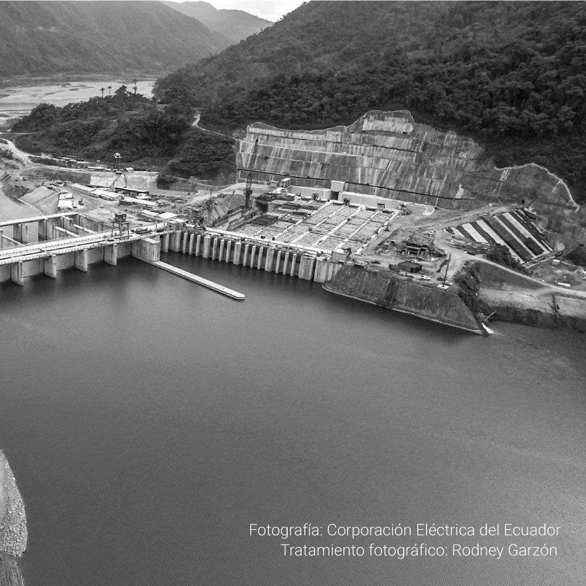
Corporación Eléctrica del Ecuador.
Celec knew how important this procurement was, but there were still irregularities. The most significant finding was that the contract had four administrators for the services of "drilling, geophysics and testing in the Coca River erosion zone."
Why do these works, tainted by suspicions of corruption, matter so much? Because regressive erosion could literally leave the country without a project worth nearly $2 billion. Without the Coca Codo Sinclair hydroelectric plant, which, according to the Attorney General's Office's latest investigations, allegedly generated some $76 million in kickbacks for former president Lenín Moreno and his closest circle of relatives and friends.
This is a mechanism that skirts the edges of the Public Procurement Law, and the Energy Ministry itself had to suspend it and report a "suspicious" attitude on the part of Celec's manager, Nicolás Andrade, in pushing these contracts into an emergency regime. Emergency procurement is a legal mechanism for choosing a supplier without a competitive bid and keeping pre-signing controls to a minimum.
Andrade was also one of the trusted men in the circle that ran the electricity companies from the shadows. He was removed from his post this past December 30, days before his ties to El Gran Padrino were revealed. After a clash with Energy Minister Fernando Santos, he signed his exit from the government, accused of mismanagement, of failing to maintain the thermoelectric plants and of pushing the country toward possible power rationing, something not seen in two decades.
His replacement was a familiar name at the electricity corporation: Gonzalo Uquillas. In 2018, at the height of Cortázar's mafia, he headed Celec, and he stayed until 2020 with the blessing of former president Lenín Moreno. Now he is back in charge with Lasso's backing.
09The day the government killed the messenger
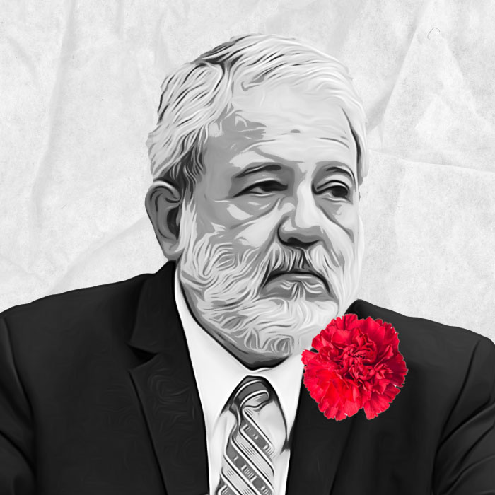
Luis Verdesoto, the messenger.
At 9:00 a.m. on January 23, 2023, President Guillermo Lasso settled into his armchair and cleared his throat. He had summoned his most trusted team to his office to receive the special report from the anti-corruption secretary, Luis Verdesoto, on the allegations against his government published by this team. Lasso himself had publicly commissioned the internal investigation and announced it to the country. Once he had the final document in hand, he began reading it aloud, according to eyewitnesses who described the scene to this outlet.
Present at the meeting were the secretary of administration, Iván Correa; the legal secretary, Fabián Pozo; the communications secretary, Andrés Seminario; and his adviser, Aparicio Caicedo.
Verdesoto's work hit like a meteorite. "How could you betray me like this," Lasso told his subordinate, friend and adviser. Verdesoto himself would confirm the quote weeks later before the legislative committee that investigated the president and recommended his impeachment.
Verdesoto was extremely critical of the president himself over that executive decree. "This arrangement may mean that strategic decisions involving the state budget rest on the integrity of a single person with the deciding vote." He was referring to Hernán Luque, to whom, as noted, the president had handed total control of the state companies. The then-anti-corruption secretary went further: "Institutional weakness was meant to be solved by concentrating decision-making power in EMCO and its board… It may have become the channel through which internal and external corruption seeped in." And he went further still: "The concentration of privileged information could lead to corruption risks."
The meeting lasted three hours. There were harsh exchanges. Verdesoto, a figure of national standing, a respected academic linked for more than a decade to civil society organizations that fight corruption, handed in his resignation right there. He had it printed and tucked in his jacket pocket. The president tried to persuade him not to present the report. The press conference scheduled for 10:30 a.m. that day was canceled. Verdesoto's resignation was accepted immediately, as Foreign Minister Juan Carlos Holguín escorted him out of Carondelet Palace. Verdesoto never signed the document. But it was leaked to this team and made public.
Weeks later, the Verdesoto report would become one of the key pieces of the legislative investigation. By then, the National Assembly had approved the creation of a multiparty committee tasked with gathering the evidence needed to establish political responsibility. Verdesoto confirmed before the National Assembly that the president had "withdrawn his confidence" in him to prevent the document from being made public. And the committee, in a 221-page report, ended up recommending that the full legislature put the president of the Republic on impeachment trial. The recommendation was approved with 104 votes out of a possible 137.
10The Great Report
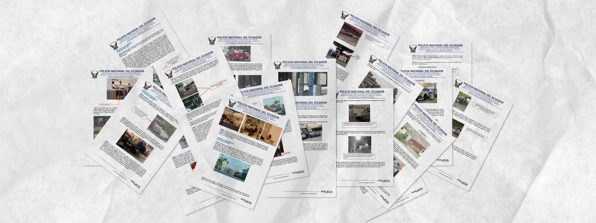
The Great Report: Operation León de Troya.
By this point, the investigation had already set off a political and judicial tsunami. But after weeks of inquiries and confidential interviews, this team got its hands on a devastating piece of evidence that by then had become almost a legend: The Great Report.
The drug trafficking ties of Rubén Cherres, the best friend of the president's brother-in-law, did not go unnoticed by this team. Nor by the authorities. Starting in June 2021, less than two months after the president took office, the National Police's counternarcotics intelligence unit flagged Danilo Carrera's best friend in a scheme involving the Albanian mafia. That relationship would change the investigators' lives forever, and it remained hidden from the public until this investigation revealed it.
On May 13, 2021, Lieutenant Rodney Rengel was assigned an investigation: to track HD León, whom a human source had linked to drug trafficking in the coastal province of Manabí. The court order authorizing surveillance was the first in prosecutorial case file No. 13284-2021-033395G, in which Manta judge César Ponce authorized the secret but legal operation.
HD (a police code meaning "Unknown Man," which precedes investigative nicknames) León was followed one morning as he drove his white car, license plate GSY-2454, according to the timeline in the León de Troya report, which this team obtained thanks to the confidential cooperation of judicial and police sources. The trail led to the port of Manta, specifically to the outside of the company Osaka Fish, which, according to the police report, was allegedly used by a criminal structure linked to the Albanian mafia as a front for its operations. Police believe drugs were concealed in that company and exports were contaminated, testing positive, according to European police partners, in at least three shipments to the European Union and the United States. Osaka Fish has denied the accusations in a letter sent by its lawyers to this outlet.
The agents shot drone videos and photographs of everyone who entered and left the premises. One of them was the already familiar Rubén Cherres, Danilo Carrera's best friend and partner of the Albanian Gjika Dritan, 46, considered a key player in the Balkan drug network. A man feared in the criminal world.
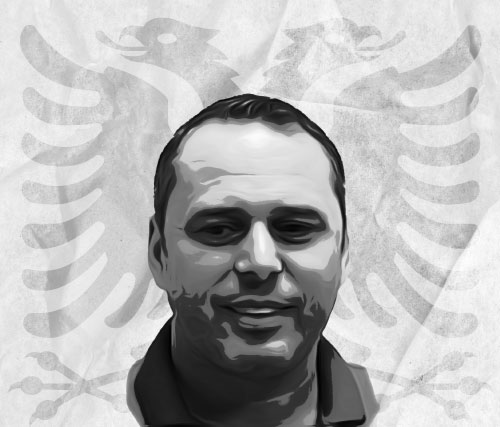
Rubén Cherres, flagged by counternarcotics intelligence.
Police made Cherres the central subject of the investigation, along with the Albanian mafia: they documented his meetings and, under court order, intercepted his communications. Some of those meetings, such as one on May 18, 2021, took place at the SkyBuilding café in Guayaquil, according to page 9 of the León de Troya report, prophetically named, according to some of the investigators, because its revelation would set "Troy on fire" in the country. In these episodes, the surveillance log records, Cherres mingles with the whole structure, which included his Albanian partner and others convicted of drug trafficking or wanted by the courts.
Another meeting, even more compromising, took place on August 4, 2021. At the Zerú restaurant, also in Guayaquil, agents captured images of Cherres counting cash inside a manila envelope in full view of the other diners.
Cherres's relationship with international drug traffickers had been brewing for a long time, since 2012, to be exact, according to public records from the Superintendency of Companies, when they created Cosobrivsa, a construction company that lasted only two years. They then created Construador, which was declared inactive in 2016. Their business ventures continued in 2018, when the two founded two real estate companies, Inmobitrust and Inmobirealstate, whose shares they later transferred to third parties.
But what caught investigators' attention most was that, in a burst of entrepreneurial inspiration, Cherres and the Albanian created eight companies in a single day, June 17, 2021, evading all of the country's legal anti-money-laundering controls. That is, during the counternarcotics team's surveillance and under the Lasso government.
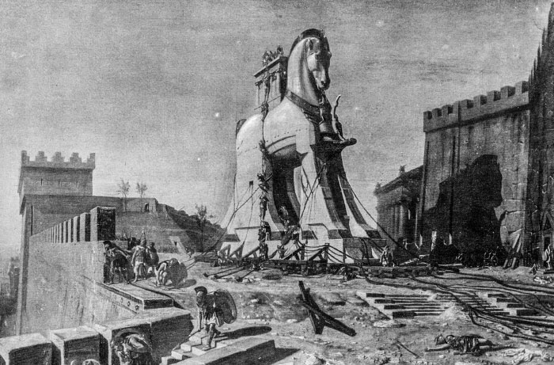
Eight companies created in a single day: June 17, 2021.
The companies were Trsutal, Drixsa, Drisard, Inducord, Inmord, Bodegsar, Corpsalcorp and Inmosad. All of them were registered at the Third Notary Office of Daule and cleared the checks of the Superintendency of Companies and the Guayaquil Business Registry in just 10 days.
The Albanian mafia landed in Ecuador in 2009 with a small group that set about making contacts with businesspeople who could help it build a front to start trafficking drugs to Europe. Its operations went almost unnoticed until 2021, when the murders of people close to it began making the news.
An alarm went off in every counternarcotics unit in the country. The Albanian mafia was growing: it already had operations in the provinces of Guayas, Santa Elena, El Oro and Loja, and was even fighting the Mexican Sinaloa and Jalisco New Generation cartels for territory, with the help of Ecuadorian criminal gangs.
But the police operation was not just surveillance. This team's revelation includes summaries of 10,000 transcripts of intercepted phone calls, as well as an archive of videos and photos of the meetings. Those intercepted communications linked Cherres to Carondelet Palace and put the Albanian mafia on a direct line to the president's office, thanks to Danilo Carrera's influence.
Page 64 of the counternarcotics report describes a meeting between Rubén Cherres and Danilo Carrera on July 14, 2021. Far from being a social call, the meeting was highly political.
To understand the scope of the meeting, however, one needs the transcripts of the intercepted calls between Carrera and his friend Cherres. On July 2, 2021, at 5:42 p.m., for example, they spoke for 1 minute and 45 seconds about Víctor Araus, a senior police officer who two months later would be included on the list of "narco-generals," in connection with a statement to that effect by the U.S. ambassador in Quito, Michael Fitzpatrick. Days after that public label, the U.S. government revoked General Araus's visa.
In the call, Danilo Carrera says he is "about to go into Carondelet" to talk with President Guillermo Lasso. There, at Cherres's instruction, he was to defend and back Araus. The general was in a controversial process to be promoted to the rank of inspector general.
With this evidence, investigators added El Gran Padrino, Danilo Carrera, to their list of targets and gave him the alias "HD Danny." His meetings and calls were recorded.
"HD Danny" talked about Araus again. One of the calls said the general wanted to personally thank Danilo for his efforts, after a meeting at the home of the president's brother-in-law.
General Araus confirmed to this team that he went to Danilo Carrera's home seeking "political support" and that the meeting "was arranged by Rubén Cherres" on the recommendation of then-Government Minister César Monge, who died in mid-2021.
But the matter goes beyond good offices for former general Araus. The long, detailed archive contains dozens of occasions on which Rubén Cherres and the president's brother-in-law sponsored people who ended up working as Lasso government officials.
That is how they talked up, lobbied for and championed deputy managers at Banecuador and ministers such as the former acting agriculture minister, Bernardo Manzano, who had to resign after confirming what the transcripts said. "He called me and asked for my résumé," Manzano admitted in an interview with Radio Sonorama after publication, referring to his relationship with Rubén Cherres, which he had previously described as casual and "social."
The report contained a drop of political poison: the alleged contribution to Lasso's last presidential campaign, arranged by Cherres and his "partners." It amounted to a million and a half dollars in COVID tests, medicine and T-shirts. That is what the Albanians' partner said in one of the intercepted calls to Juan Carlos Reina, son of Banco Guayaquil founder Douglas Reina. In Guillermo Lasso's campaign, his closest allies were Danilo Carrera and José Nebot, the father-in-law of one of Lasso's children, who organized a business front to support him. Cherres was also part of that group, José Nebot told this team, confirming that Cherres worked actively on the campaign and was in charge of obtaining "masks and COVID tests" for the pro-Lasso front.
Months later, Cherres himself vented his anger that his "partners," who had put money into the campaign advertising, were not getting the response they wanted from the government.
All of this evidence is contained in the report signed by Lieutenant Colonel Bolívar Zambrano and delivered to Marcelo Váscones, the Manta prosecutor. It is now in the hands of the Attorney General's Office's Transnational Crimes Unit, the prosecution service's elite team for investigating large-scale drug trafficking, money laundering and arms trafficking cases.
The consequences of that report, which was shelved at the suggestion of the National Police, meaning the Interior Ministry, meaning the government, are still unfolding. The government denied, first in a written statement and then in a national presidential broadcast, any role in closing the investigation. In the broadcast, President Guillermo Lasso admitted that his brother-in-law "may not have been very suspicious" in choosing his friends. But he attributed the investigation to a conspiracy against his government in which he implicated this team. Days later, the presidential statement was condemned by Paris-based Reporters Without Borders, which called it "an assault on freedom of expression." Carrera, for his part, had already sued this journalism team for half a million dollars for "damaging his honor."
Despite all this evidence, as noted, the report was shelved at the Attorney General's Office. And a judge declared it "confidential," even though the investigation was at no risk, since it had been disbanded. This team's reporting indicated that the decision aimed to keep the facts from coming to light and that the shelving involved political orders. The Attorney General's Office ordered a review of the case and finally decided to reopen the investigation after finding new evidence.
Reporters Without Borders condemned the presidential statement.
11The government knew.
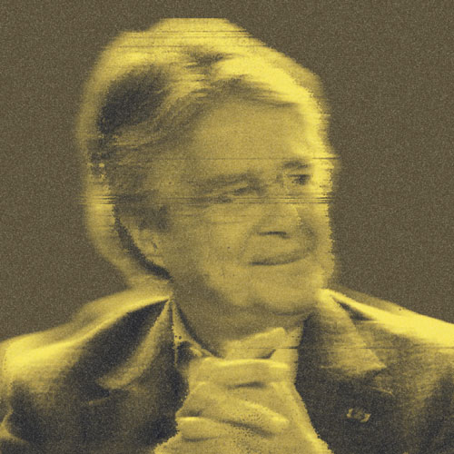
Guillermo Lasso admitted he knew about the police report.
Guillermo Lasso had to confess it: he did know about the counternarcotics police report that linked Rubén Cherres and his brother-in-law and mentor, Danilo Carrera, to an investigation into the dangerous Albanian mafia. He did so in front of a dozen foreign correspondents who were invited to the Yellow Room of the presidential palace on the condition that nothing said there would be made public. They were even warned that the presidency would give them a press release with the "facts" they could report. None of those present published anything about it.
One of those present recorded and leaked the conversation. His statement was brief. "It has to do with an investigation the National Police had started, which I was informed about in July (2021). Really, I took note of an investigation that was 10% under way. You'll understand that I can't be informing Ecuador of every investigation the police carry out. I can't report the report. The police are investigating, and I moved on. I never intervened again," the president said in a measured voice. Asked whether his government intervened to have the inquiry closed, he replied: "No one can come out and prove that I committed such an outrage." But it could be proven.
By February 2023, the investigative team had made public several pieces of evidence that cast suspicion on how the investigation was dismissed.
The meeting the president acknowledged in private was reported by this outlet after it obtained the visitor entries in the presidential palace's military intelligence log. It took place on July 7, 2021. The head of the counternarcotics investigative team, Lieutenant Colonel José Luis Erazo, and then-Police Commander Tanya Varela attended a confidential meeting with the president of the Republic that was not on his schedule.
At that meeting, which the president confirmed nearly two years later to one of the government's allied assembly members, Fernando Villavicencio, they presented the president with the findings of their operation against the Albanian mafia and the connection to his brother-in-law. What was said stayed in the president's office, but its consequences would become public months later.
Neither Lieutenant Colonel Erazo nor General Varela responded to this outlet's questions about what was discussed at the meeting.
However, an official document published by this outlet confirmed that the suggestion to close the case came from the police. On December 21, 2021, in official letter 2021-650-UCTCI-MANTA, Captain Christian Moya asked the prosecutor in charge for "the closure of the preliminary investigation, if feasible" in the León de Troya case. According to agents in the unit, such requests are not just unusual but almost unheard of.
In addition, based on eyewitnesses to a September 2021 meeting, this team reported that the general then in charge of counternarcotics, Giovanni Ponce, and the general then in charge of police intelligence, Mauro Vargas, gave verbal instructions to the team that had built the investigation to close it.
The National Police, in an unsigned statement, denied any involvement by either officer or by the institution.
However, this outlet's team detailed how a transfer order signed by the counternarcotics police chief, General Giovanny Ponce, reassigned the team that had been working on the investigation. Between October of that year and January 2022, all 14 officers were removed from the unit and sent to serve in areas where their lives, as intelligence agents who had handled drug trafficking cases, were in obvious danger. One of them was Lieutenant Colonel Erazo, who was transferred to southern Guayaquil, the most volatile area of drug gang operations. Something similar happened to the rest of his colleagues.
After this revelation, in 2023, the National Police transferred the former investigative team again, this time to work from Quito. Three members of the unit received death threats: "if you show up at the Assembly you're a dead man" (sic), read one of the messages sent to Erazo, according to the complaint on file with the Attorney General's Office. It happened the same day the legislative committee investigating the president's political responsibility summoned the officers to testify. No police officer was authorized to do so. So none of them could say whether the gradual but violent dismantling of the unit had led the case to its desired shipwreck.
12"This has to be shut down"
"This has to be shut down."
Denying it was not enough.
The investigative team proved the illegal political order that the National Police command gave its subordinates to shut down the narco-politics investigation, as shown by several leaked recordings, provided to this outlet by participants in those clandestine meetings.
At a meeting called by Generals Mauro Vargas (Intelligence) and Giovanni Ponce (Counternarcotics), attended by part of the León de Troya investigative team, the judicial future of impunity was decided. The atmosphere was tense; the investigation had gone too far.
"How many cases have we investigated?" General Ponce asks. He doesn't expect an answer; it's rhetorical. "But precisely in this one, where the President is involved, we're putting our whole heart into it." The remark sounds like a reproach. Because it is. So, right after, he gives the order: "I think we should shut this down. Because tomorrow this is going to affect the President." A voice backs him up. "Yes, I think so too," says General Vargas.
The conversation is full of detail. They must close the preliminary investigation and open a new one "for money laundering" or whatever, so that the National Police's investigative effort would focus on the drug traffickers and not on the political ties. Otherwise, Ponce concludes, "the president is going to tell me: you're investigating me." It was that simple, and the investigation in fact went nowhere. Cherres went on operating and playing tennis with the powerful, and the Albanians went on running their dark business.
The entire police leadership abandoned its constitutional duty to protect citizens and decided, covertly and contrary to what they had admitted, to protect political power.
The police commander general at the time, Tanya Varela, was herself aware of the decision to shut it down. "I was very clear with Mauro Vargas: I don't care about this, if you want to tone it down, tone it down." With those words she allowed the illegal shelving of the report, according to another recording, from a September 2021 meeting at National Police General Command, also made public by this team. But that's not all. Varela, unaware she was being recorded, confesses that the president of the Republic broke the confidentiality of the information to warn his brother-in-law, a subject of the investigation, about it. "I know that Danilo Carrera isn't going in because the President called me to the Presidency and told me, this says: He's not going to talk anymore, it's over." The coincidences are striking. After Lasso allegedly warned his brother-in-law, all the targets changed their phones to avoid the wiretaps.
None of the generals nor the National Police responded to this outlet's requests for comment.
On the day of publication, despite the president's denial, the government removed Vargas and Ponce from their posts in the National Police high command.
13The great political earthquake.
The great political earthquake.
Never before had an investigation by journalists produced such political and judicial effects, despite the risks and threats the reporting team received, some of them from the presidential palace itself.
Following January 9, the Attorney General's Office opened eight investigations related to this corruption and drug trafficking scheme. The cases cover organized crime, bribery, extortion by public officials, drug trafficking and influence peddling. At least 80 people have been called to give statements, there have been 12 raids on private property and public offices, and the case files run to thousands of pages in the ongoing investigations, all under the jurisdiction of the National Court of Justice, meaning they involve crimes allegedly committed by senior state officials.
For its part, the Comptroller General's Office, the nation's auditor, has begun special audits of about a hundred contracts in the electricity and oil sectors, totaling at least $1 billion, on suspicion of irregularities. The contract review could lead to new findings of administrative or criminal liability.
Ecuador's National Assembly triggered an oversight mechanism never before invoked against a sitting head of state under the current Constitution: an impeachment trial of the president of the Republic on the grounds of having committed "crimes against public administration." The opposition succeeded in activating Article 129 of the Constitution, which sets out the grounds for impeachment. And for the first time in 90 years, an impeachment trial of a sitting president was held, on May 16, 2023, before the full National Assembly. In the early hours of the next morning, the government dissolved the legislature. And the National Electoral Council (CNE) called early elections.
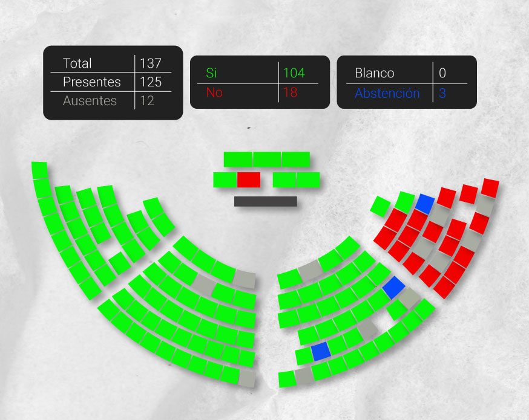
104 votes in favor of the impeachment trial.
The national government dismissed three cabinet ministers, two deputy ministers, six state company managers and two generals. And President Lasso's popularity fell to a historic low of 8% approval, according to opinion polls.
At the time this work was published, not a single person had been arrested. Lasso keeps tirelessly denying any involvement, but he has distanced himself from El Gran Padrino.
14They killed the man who knew too much
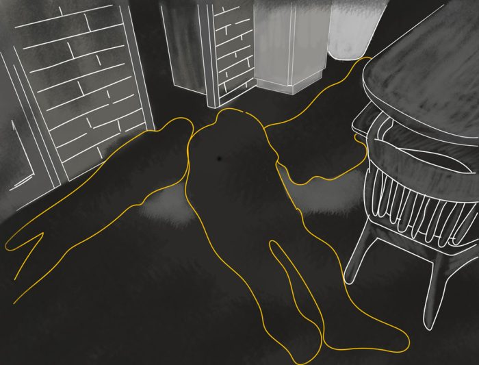
Punta Barandúa, less than a kilometer from the president's beach house.
The killers were merciless. They tied them up so they couldn't defend themselves, tortured them and shot them. At point-blank range. As many times as they could.
That was the crime scene where Rubén Cherres was found. Danilo Carrera's best friend had managed to evade Ecuadorian justice for at least 70 days, since his name and face appeared in the first reports of this investigation. The Attorney General's Office had pushed for his arrest so he would give his statement in the investigations opened into the alleged shady deals in the state's strategic companies.
His testimony was key to the inquiry being carried out by the Attorney General's Office's special teams. Perhaps too key. It was Rubén Cherres who talked with Hernán Luque, in the recording that marked the beginning of the end, about the 150,000 dollars and the account in Andorra. It was Rubén Cherres who called the president's brother-in-law to offer him résumés of people who were later appointed to public posts with ministerial rank. It was Rubén Cherres who kept in contact with the Albanian mafia, according to counternarcotics police records.
The list of inquiries bearing Cherres's name seemed endless. His name also appears in a possible violation in the elections that took Lasso to Carondelet Palace. He said his "partners" gave the campaign "a million and a half dollars in T-shirts, masks and medical devices" to fight the COVID pandemic. Donations that were presumably made to win the February 2021 runoff. CREO, the ruling party, denied receiving those contributions.
They had better hope so. Guillermo Lasso's campaign officials never reported a contribution of this kind to the National Electoral Council. And Ecuadorian law requires all political organizations to file a specific report on all their contributors, with cash amounts and donations. Anonymous contributions are not allowed under any circumstances: the Democracy Code states that any contribution over 10,000 dollars must be backed by a "lawful origin of funds" form, filled out under the rules of the Financial and Economic Analysis Unit (UAFE), the agency that pursues money laundering in all its forms.
A report by the Observatorio de Gasto Público, an independent NGO that follows the trail of public money, found no trace of Cherres's contributions in any official report. However, they were confirmed to this team by one of the most prominent members of President Guillermo Lasso's campaign, José Nebot, the father-in-law of one of Lasso's children. Nebot said he does recall Cherres's active contribution during the election period, specifically with "medicine, masks and supplies." CREO never denied Nebot's statement.
The National Electoral Council, never one to hurry, still has its audit of Lasso's 2021 campaign accounts open, but it did not open any special case file on the donations from Cherres and his partners.
Cherres knew they were looking for him, and he did not choose a remote place to hide from the police. He rented a house in Punta Barandúa, one of the country's best-known beach resorts, less than a kilometer from the president's beach residence. For two months, his neighbors said after his death, they saw him arrive driving his BMW. Everyone knew he lived with his girlfriend, Joselyn Rivadeneira, a 30-year-old woman who filmed their clandestine stay in videos she later posted on TikTok. He also received visits from his closest friends.
The hitmen were cleverer than the police and found his hideout this past March 30. At some point that night they arrived at the beach resort and tied up the only guard protecting the house, 54-year-old Juan Perero, who had earlier told his wife that the tenant was expecting a friend.
The friend was César Eduardo Amador, a Guayaquil businessman close to Cherres. That night he brought Cherres his favorite bread, according to Amador's relatives, who asked that their names be withheld. Joselyn Rivadeneira, dressed in workout clothes, was already in the house. As of this writing, the Attorney General's Office and the police had no solid leads on the killers or the masterminds of the massacre.
Investigators know that Cherres, his friend and his girlfriend were bound and beaten before being shot in the back. Their bodies were found together, face down, in the dining room of the house. The gated community's guard, also murdered, was left in the storeroom. They didn't even remove the blue rope they had used to tie his feet and hands.
Three days after the crime, the National Assembly's Oversight Committee began the process toward a possible censure of President Lasso. Cherres's testimony was key to that trial, as well as to the eight judicial cases, but it was lost forever.
15How do you defend a president?
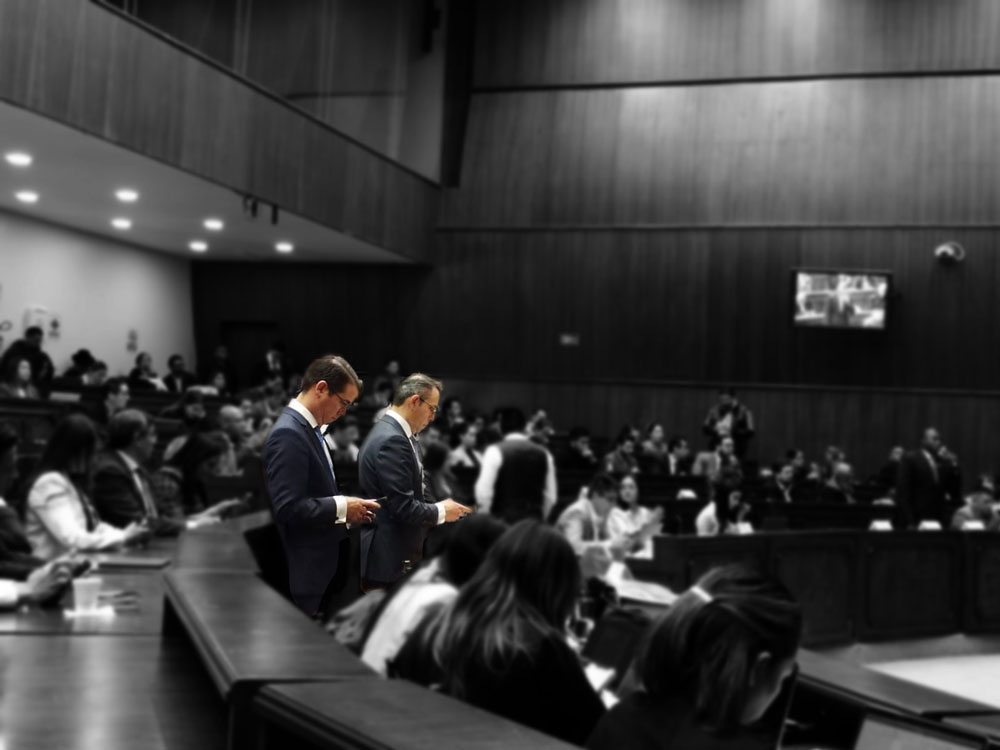
The president's lawyers.
Ecuadorian President Guillermo Lasso's lawyers seem cut by the same tailor. A classic haircut parted on the right, thin glasses, dark suit, white shirt with cufflinks. The presidency's legal secretary, Juan Pablo Ortiz, and the president's private lawyer, Édgar Neira, could be from the same family. Both laughed openly at the opposition, which they dismissed as incompetent. They also rose from their seats at the same time, walked with the same swagger, both hands in their pockets, and repeated the same gestures when they looked at their cell phones.
But if there is one thing they share more than anything, it is their conviction that Lasso is the option for a better country. They have believed it for more than a decade, since they began working for the cause they would see perish in their hands: for weeks, both tried to sabotage the impeachment process, arguing that the law and procedures of the National Assembly were being trampled.
Politics, however, would have the last laugh: the force of the votes always wins out.
16The great failure
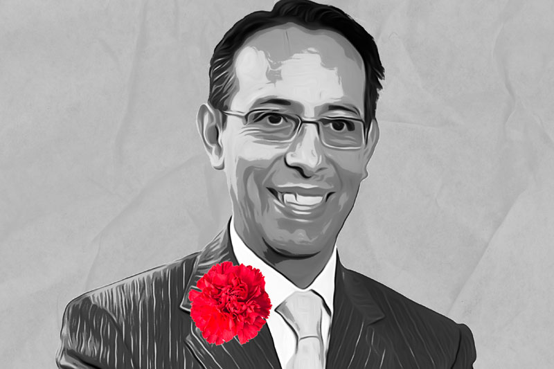
Édgar Neira, the bet that failed.
Some plans can't fail. But they do. Bringing in Edgar Neira was one of them.
A sought-after constitutional lawyer, expert arbitrator at the Quito Chamber of Commerce, private attorney, professor at the Catholic University and, above all, a key member of the selection process to renew the Constitutional Court, an impenetrable wall for politics and journalism, in whose hands lay the birth or death of the announced impeachment trial against President Guillermo Lasso.
Under Ecuador's Constitution, an impeachment trial requires not only strict grounds but also the approval of a qualified majority (two-thirds) of the country's least politicized institution, the Constitutional Court. That extra safeguard, meant to prevent rash action in a country that at the start of the century had seven presidents in 10 years, was the government's last line of defense against the fallout from the investigation.
That is why Neira was its bet.
Neira is no ordinary lawyer. A fan of President Lasso, he was notified on August 15, 2021, that he would serve on the Qualifying Commission for the renewal of the Constitutional Court, which takes place every three years to replace one-third of the justices.
During Guillermo Lasso's government, Alejandra Cárdenas, Richard Ortiz and Jhoel Escudero were appointed. So Neira's appointment was a subtle way to get close to a base of three judges with whom he had a relationship before their appointment.
Never before has a plan produced such poor results.
On March 29, 2023, the three judges were part of the majority, along with Karla Andrade, Daniela Salazar and the court's president, Justice Alí Lozada, that ruled the charges against the president of the Republic, based on this investigation, had sufficient constitutional grounds and should proceed through the regular process in the legislature, something that had not happened in Ecuador since 1931.
17Then everything came crashing down
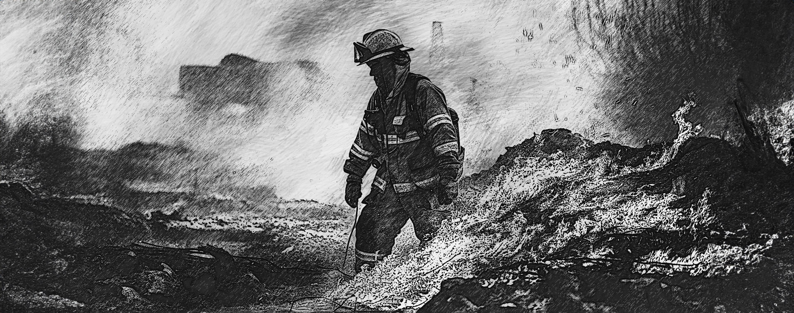
The early hours of May 17, 2023: "muerte cruzada."
When it rains, it pours. Everything that could be lost on the political field was lost. The government saw 104 votes light up green to approve a criticized oversight report that recommended impeachment. It counted 88 votes, 18 more than needed, demanding that the trial go ahead even though the ruling party had managed to block the legal production of a written report to support the impeachment. And it saw 96 votes (4 more than enough to remove the president) to keep in office the opposition president of the National Assembly who was leading the push for censure, Virgilio Saquicela.
So President Guillermo Lasso attended the historic proceeding convinced that the legislative math was against him. Perhaps that is why he used less than a third of the time the Constitution guaranteed him to defend himself, or chose to ignore the rule requiring him to appear in person for his questioning.
That same night, he holed up with his closest team at Carondelet. They waited for the cover of night, and in a decision so secret that even Vice President Alfredo Borrero was kept out of it, he decided to dissolve the legislature, days before his imminent removal.
In the national broadcast, recorded in the Yellow Room of the presidential palace at 3:00 a.m., the president was joined by Foreign Minister Gustavo Manrique; Defense Minister Luis Lara; Government Minister Henry Cucalón; Interior Minister Juan Zapata; and the presidency's legal secretary, Juan Pablo Ortiz.
At 6:00 a.m. on May 17, 2023, copies of the recording began to be distributed to national media with instructions to hold it under embargo for an hour.
At 7:00 a.m., the country learned that the legislature had ceased to function, that for the first time under the current Constitution general elections would be brought forward (elections in which Guillermo Lasso ultimately did not run) and that El Gran Padrino would no longer be the subject of any impeachment trial, although eight criminal cases still lie ahead, along with the inevitable judgment of history.
Timeline
Thirty-four days that shook power
From January 9 to February 23, 2023: every installment, every government reaction and the daily podcast that narrated the investigation as it unfolded.
JAN 9Installment 01 · 2023
The first revelation of this investigation into the corruption structure in state companies. A recording of a man who is part of that structure reveals how it all works.
JAN 10Installment 02 · 2023
An assembly member from UNES, Ronny Aleaga, is named by Leonardo Cortázar as part of the corruption structure. The godfather, Danilo Carrera, sues the outlet for defamation.
JAN 11Installment 03 · 2023
The corruption structure at CNEL is laid out in detail, and Boscán takes all the information to the National Assembly. The government denied all the allegations in this investigation.
JAN 12Installment 04 · 2023
The opposition proposes creating a National Assembly committee to investigate this investigation's allegations of corruption in the Lasso government.
JAN 14Installment 05 · 2023
President Guillermo Lasso says he will cooperate with the investigations into corruption in his government.
JAN 16Installment 06 · 2023
The recordings of Hernán Luque with Rubén Cherres are released, in which they discuss how to carry out acts of corruption in the electricity and oil sectors. The interior minister says he will capture Cherres.
JAN 17Installment 07 · 2023
The investigative team reveals how an agreement between Flopec and a private company causes multimillion-dollar losses to the state while the authorities do nothing. Danilo Carrera demands half a million in damages.
JAN 18Installment 08 · 2023
The committee to investigate the El Gran Padrino case was formed in the National Assembly by the Correístas, the Social Christians and their allies.
JAN 19Installment 09 · 2023
Lasso wants the Anti-Corruption Secretariat to oversee the state companies.
JAN 20Installment 10 · 2023
The Attorney General's Office carries out raids to investigate those involved in the case, which in judicial circles becomes known as the Encuentro case.
JAN 22Installment 11 · 2023
President Lasso denies that a corruption structure exists but condemned the acts of corruption committed by Hernán Luque. Once again, he defended his brother-in-law, Danilo Carrera, in a national broadcast.
JAN 23Installment 12 · 2023
This investigation revealed another recording of a conversation between Rubén Cherres and Danilo Carrera about their plan to place a minister in the Lasso government. The anti-corruption secretary delivered his report on the allegations in the state companies.
JAN 26Installment 13 · 2023
Representatives of the UNES and Pachakutik parties chair the ad hoc committee that will investigate the El Gran Padrino case in the National Assembly.
JAN 27Installment 14 · 2023
The foreign minister defends himself before the Attorney General's Office.
JAN 28Installment 15 · 2023
CNEL's manager is ousted over the corruption allegations.
FEB 1Installment 16 · 2023
Lasso says his government is under a "rude and lying" attack
FEB 2Installment 17 · 2023
Managers and officials of the state companies respond to the allegations.
FEB 3Installment 18 · 2023
Oswaldo Rosero, manager of FLOPEC, the state company that ships crude to international markets, left his post.
FEB 4Installment 19 · 2023
Petroecuador tries to shield itself so the corruption can continue.
FEB 8Installment 20 · 2023
Two recordings are released in which Mauricio Guim, a trusted Lasso aide, talks about deals in the state companies. The investigation also brings to light several irregularities at Petroecuador.
FEB 9Installment 21 · 2023
The president's cabinet changes after the allegations, and authorities detain Mauricio Guim.
FEB 10Installment 22 · 2023
More raids in the El Gran Padrino investigation. Petroecuador's manager leaves his post.
FEB 11Installment 23 · 2023
Assembly members ask the Attorney General's Office to keep eight former government officials allegedly involved in corruption cases from leaving the country.
FEB 13Installment 24 · 2023
This investigation reveals a police report showing alleged ties between the government and the Albanian mafia. The wiretaps from the investigation are presented, and Andersson Boscán takes all the information to the National Assembly.
FEB 14Installment 25 · 2023
A police general is implicated in the Great Report over meetings and communications with those involved. The president attacks the press over the allegations.
FEB 15Installment 26 · 2023
The former agriculture minister is also named in the report on drug trafficking and its ties to the government.
FEB 16Installment 27 · 2023
The details of how the Albanian mafia operates in Ecuador, and how Cherres was part of Lasso's presidential campaign.
The colonel in charge of the investigation into the Albanian mafia in Ecuador receives death threats.
FEB 19Installment 30 · 2023
The police officers who worked on the León de Troya case received death threats.
FEB 20Installment 31 · 2023
The chair of the committee investigating the case received death threats.
FEB 21Installment 32 · 2023
The National Assembly prepares to deliver its report on the El Gran Padrino investigation.
FEB 23Installment 33 · 2023
President Lasso knew about the drug trafficking report implicating his government and did nothing.
The network
Who's who and who calls whom
A map of the relationships documented in the investigation: recordings, intercepted calls, decrees and appointments. Hover over or tap a name to see its connections.
Each line corresponds to a fact documented in the article. The photographs are the ones originally published in 2023.
Profiles
The people involved
Twenty-one names. Their position, their link to the scheme and what happened to them. Status updated as of the last installment in 2023.
Impact
A political earthquake
The El Gran Padrino revelations had a digital impact, with thousands of reactions, interactions and views, and an unprecedented institutional response.
One of the investigations that impressed me was the Gran Padrino case because I voted for Guillermo Lasso, I thought he was a decent person, until I watched La Posta and they showed how his brother-in-law and others were stealing. After that, linked to the Albanian mafia, my perception of the government changed, and it doesn't have my approval anymore, and never again for anyone who has anything to do with Guillermo Lasso.
The investigation brings balance to justice, that it's not only the traditional media that have the openness to reach the information we citizens need. Nowadays small and digital outlets set the agenda, because they're the ones who uncover acts of corruption. That's what makes the difference between traditional journalism and digital journalism.
In a way I feel relief, the information you've been able to gather is incredible, the information you've been able to gather is scandalous, and of course for me the conclusion is admiration.
I was surprised by the brazenness with which Luque spoke and the scandal of the impunity with which this man believed, spoke and acted. Of course, those of us who aren't in these schemes tend to be surprised by how these things happen, we thought they happened much more discreetly, and seeing it and hearing it has been quite shocking.
As a citizen I appreciate and encourage media outlets to have a section dedicated to investigative journalism, because that's the only way that we, the so-called "ordinary citizens," can know what goes on behind the scenes of national politics and the handling and management of the public sector.
What makes me a little happy is that now there's a new generation that I think wants to change history. Among them a new way of doing journalism like La Posta that investigates them and unmasks these criminals, that can help so that someday the system of government, of justice in Ecuador is like here in Italy, which isn't perfect but works better than in Latin America.
The voice of power
Bernardo ManzanoFormer agriculture minister
He acknowledges that he did know and talk with Rubén Cherres. "I met him at a social gathering, then he called me to ask for my résumé." He says Cherres had no influence on his appointment.
Esteban TorresSocial Christian Party caucus leader
He says that over time the information presented by this investigation proved to be true. The Social Christian legislator pushed for the impeachment trial of President Lasso.
Henry CucalónGovernment Minister
The minister maintains that the government has nothing to hide. "I hope they throw that tyrant (Hernán) Luque in jail, I hope they throw that tyrant (Rubén) Cherres in jail."
Ismael QuintanaConstitutional lawyer
On the Attorney General's Office: "Sometimes it surprises us with its speed, and in other cases, like this one, things seem to move more slowly. It gives the impression that there's a certain selectivity."
Mae MontañoFormer Minister of Economic and Social Inclusion
The former official sharply questions the president, especially over the attacks on journalists. "What is the limit on freedom of expression that you are setting?"
Pedro DonosoPolitical analyst
"It is supremely important to understand the impact of this journalistic revelation (…) What the Gran Padrino did was expose Ecuador's weakness and immaturity."
Rafael LuceroPachakutik assembly member
The legislator says that a "free press makes a free citizen (…) This investigation was needed to generate a political reaction."
National and international press
Reporters Without Borders · RFIFebruary 23, 2023
Ecuador: RSF denounces the government's attempts to silence investigative journalism.
El TiempoFebruary 28, 2023
Why is Guillermo Lasso's presidency on a tightrope in Ecuador?
NTN24January 18, 2023
Allegations in the "El Gran Padrino" corruption case splash President Guillermo Lasso's family.
CNNFebruary 15, 2023
President Lasso warns that state institutions want to "topple" his government and create chaos in Ecuador.
El UniversoFebruary 15, 2023
The outlet holds the government responsible for its safety, and press groups condemn the threats amid calls not to engage in "populist journalism."
Update · September 2026
What happened next
The investigation was published between January and February 2023. Three and a half years later, the Encuentro case has one convict under house arrest, one extradited defendant in El Encuentro prison, one fugitive jailed in Buenos Aires and a president who was never charged. This is what the record shows, with dates and sources, as of September 5, 2026.
Sentenced to 10 years
Danilo Carrera
El Gran Padrino
Charged on November 24, 2023, with organized crime; house arrest because of his age. On November 20, 2024, the Anti-Corruption Court sentenced him as the leader of the organization. He appealed; the hearing ended on July 16, 2026, and the court was still deliberating when this update was completed.
Jailed in El Encuentro prison
Leonardo Cortázar
The CNEL operator
He left the country on December 20, 2022. He was captured in Panama on March 20, 2025, and extradited on February 10, 2026. His trial, together with Karen Cornejo, is set for September 14 to 18, 2026.
Jailed in Buenos Aires
Hernán Luque
Former head of EMCO
Arrested through Interpol on February 8, 2024. Argentina's Supreme Court upheld his extradition on April 30, 2026; as of September 2026, his handover was still pending a decision by Argentina's executive branch.
Sentenced to 9 years and 4 months
Antonio Icaza
Former CNEL manager
Sentenced as an accomplice on November 20, 2024. His appeal was being decided together with Carrera's.
Murdered
Rubén Cherres
The Albanian mafia's partner
His body and those of three other people were found on March 31, 2023, in Punta Blanca, Santa Elena. Two defendants were sent to trial in February 2024; there is no record of a verdict or of the masterminds.
Arrested in Abu Dhabi
Dritan Gjika
Albanian mafia boss
Captured on May 26, 2025, on Red Notices from Ecuador and Spain. The United Arab Emirates had not decided which country to hand him over to when this update was completed.
Outside the criminal investigation
Guillermo Lasso
Former president
The Attorney General's Office never charged him. The route was political: the National Assembly committee recommended an impeachment trial for embezzlement, and on May 17, 2023, one day after appearing before the legislature, he decreed "muerte cruzada" (mutual dissolution). The complaint over Flopec was shelved by the National Court of Justice on May 17, 2025. He left office on November 23, 2023.
Granted refuge in Colombia
Naín Massuh
Alias El Turco
Arrested in Bogotá in January 2025; Colombia granted him refuge in October, and the National Court of Justice shelved the extradition on April 13, 2026.
Ambassador to Argentina
Diana Salazar
Former attorney general
She left the Attorney General's Office on May 21, 2025, and was appointed ambassador in Buenos Aires, where she is handling the new extradition treaty that will decide Luque's handover.
The milestones
Jan 9, 2023First installment of El Gran Padrino; the Attorney General's Office opens a preliminary investigation.
Jan 20, 2023Nine raids in Quito and Guayaquil.
Mar 31, 2023Rubén Cherres is found murdered.
May 17, 2023Lasso decrees "muerte cruzada" one day after appearing at his impeachment trial.
Nov 24, 2023Charges filed against Carrera, Luque, Cortázar, Icaza and others.
Feb 8, 2024Luque is arrested in Buenos Aires.
Nov 20, 2024Carrera sentenced to 10 years; Icaza to 9 years and 4 months.
Mar 20, 2025Cortázar is caught in Panama.
May 26, 2025Gjika arrested in Abu Dhabi.
Feb 10, 2026Cortázar arrives at El Encuentro prison.
Jul 16, 2026Carrera and Icaza's appeal hearing ends; ruling under deliberation.
Sep 14-18, 2026Trial of Cortázar and Karen Cornejo.
Behind the scenes · January 27, 2023
El Gran Padrino behind the scenes
Seven journalists over six months: Danilo Castro, Estefanía Vaca, Juan José Albán, Doménica Vivanco, Mónica Velásquez and Andersson Boscán, with Jeff Sanguña, Christian Torres and Javier Montenegro on the team recognized by the Gabo Award. Fifteen hundred contracts reviewed, twenty-five financial reports, two tax reports, thirty-five interviews, two hundred pages of intelligence files and an archive of recordings. Andersson explained it on camera when people started saying the investigation was just a few audio clips.
The documents
The original case file linked to 48 documents hosted on a Google Drive that ceased to exist sometime between August 2023 and March 2024. The Internet Archive preserves the names of some of them and the folder listing, but not their contents. The investigation's 35 audio recordings (33 daily podcasts, the electricity-sector deal and the interview with the president) are available in full on this site. Many of the documents now live in the court file of the Encuentro case (200 pieces of evidence in the indictment of July 22, 2024) and in the National Assembly committee's report.
Names recovered from the Internet Archive
The Great Police Report (archived viewer, August 2023)
221-page legislative report
Cortázar financed Moreno's brother (video)
Quipux message to the presidency with the complaint
Senescyt: Luque has no registered degree
January 16 folder: Luque and Cherres recordings
Request to the Attorney General's Office for the capture of Luque and Cherres
Gunvor: the corporate ties of the Amazonas Tanker pool
Impact of the ships taken on time charter (Flopec, 2020)
Third Notary Office of Daule folder: the eight companies of Cherres and Gjika
General recordings folder: the police command shuts down the narco-politics investigation
Executive Decree 261 and Decree 4
Records from the Superintendency of Banks and the IESS
An investigation led by Andersson Boscán with a team of nine journalists. Today, Boscán and Mónica Velásquez continue the work from exile in Toronto.
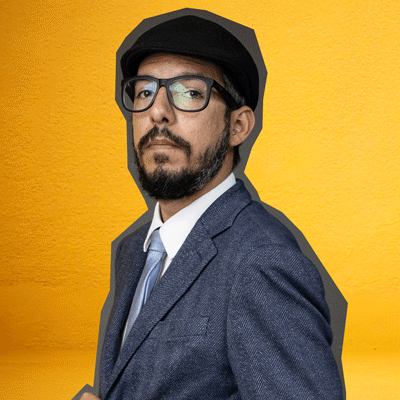
Byline
Andersson Boscán
Investigation director · Editing
Venezuelan-Ecuadorian. Two decades of political and investigative reporting in Ecuador. He has led series that opened judicial and legislative proceedings: El Gran Padrino (Encuentro case), a finalist for the 2023 Gabo Award; Ministry of Death; the local follow-up of Odebrecht; organized crime operating from prisons; and child recruitment by gangs. After receiving death threats, he was forced to leave the country in 2023 and obtained political asylum in Canada. He continues to edit and report from Toronto.
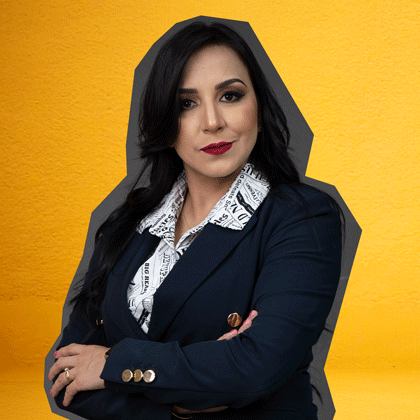
Byline
Mónica Velásquez
Investigation · Field reporting
Guayaquil, 1986. Field reporter. Recipient of the IWMF's 2024 Courage in Journalism Award for her work in places where journalism can cost you your life. Her byline also includes an Eppy Award, an honorable mention from the IAPA (SIP) and a mention from the King of Spain Award; she was a Gabo Award finalist. For El Gran Padrino she attended dozens of meetings with sources, putting her physical safety on the line to gather the information for the case.
Original investigative team · 2023
Jeff Sanguña
(Ecuador, 1995) A key player on investigative matters. His reporting and information processing were essential to breaking the case. He has worked on investigations such as the VIP vaccinations case and the sale of the deputy agriculture ministry.
Doménica Vivanco
(Ecuador, 1996) Journalist, cunning personified. Her investigations focus on public procurement and corruption. She was part of the team that pieced together the Baby Yunda case and revealed influence peddling by former minister Andrés Michelena. Narration and research for the podcast.
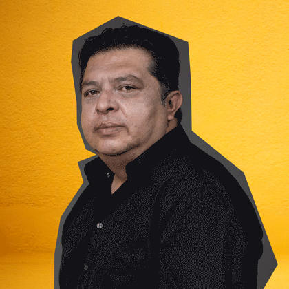
Christian Torres
(Ecuador, 1976) The team's stealth. A public procurement specialist with 22 years of experience. Part of the team that won the IPYS award for best corruption investigation (2004) and the CUPRE award (2014). Editor of this series.
Juanjo Albán
(Ecuador, 1999) The youngest journalist on the team. He gathered contracts and mapped criminal structures in hydroelectric and power plants. He studied in Leiria, Portugal, and worked with the EFE news agency in Madrid.
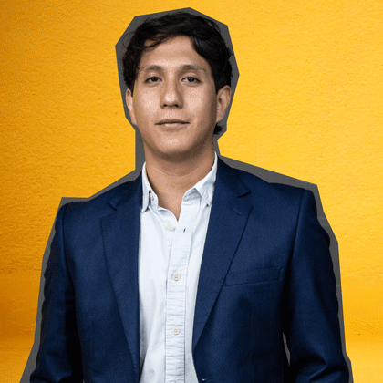
Danilo Castro
(Ecuador, 1997) The team's skeptic. He revealed the links between private companies and people tied to the Albanian mafia. Winner in 2019 of a UDLA academic award for best TV report.
Estefanía Vaca
(Ecuador, 1998) More than five years of experience in social and political investigations. After she investigated cases of sexual violence within the MIES (social inclusion ministry), a prevention protocol was created across all of the country's public institutions.
Sold out
Javier Montenegro
Full credits
Direction
Andersson Boscán
Investigative reporting
Andersson Boscán · Christian Torres · Mónica Velásquez · Danilo Castro · Doménica Vivanco · Estefanía Vaca · Javier Montenegro · Jefferson Sanguña · Juan José Albán
General coordination
Jenny Navarro · Daniela Chiriboga · Saray Chaparro
Editorial coordination
Javier Montenegro
Editing
Christian Torres
Digital strategy
Luis Miguel Chávez
Audiovisual production
Josemaría Gil · Renato Tapia · Daniel Sono · Javier Masache
Scripts
Luis Eduardo Vivanco · Doménica Vivanco · Jefferson Sanguña · Javier Montenegro
Narration
Luis Eduardo Vivanco · Doménica Vivanco
Podcast
Research and script: Doménica Vivanco · Christian Torres · Andersson Boscán · Audio editing: Javier Masache
Design and illustrations (2023)
Rodney Garzón · Viviana Guzmán
Original web development (2023)
Gabriel Maldonado
International distribution
Silrat Traslaviña
Web edition 2026
Boscán & La Moni · Eureka Media EC
Editor's note. This investigation was originally published between January and June 2023 by the team led by Andersson Boscán. This edition preserves the series' texts, documents and audio in full; direct quotes from third parties are reproduced exactly as they were spoken. 2026 web edition by Boscán & La Moni · Eureka Media EC.